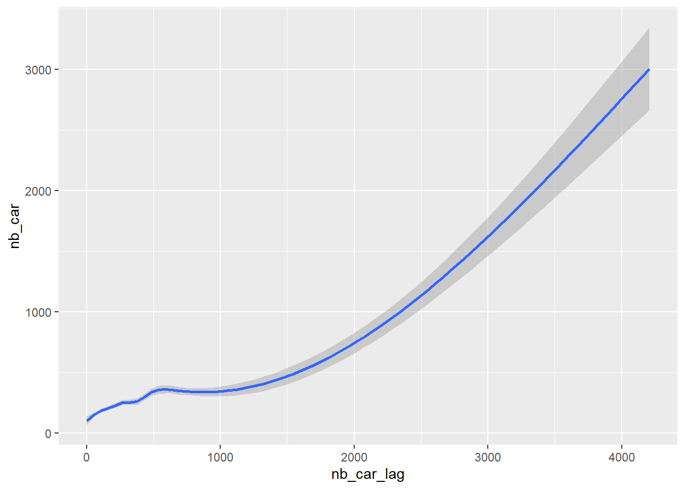

| ID | publié le | durée en secondes | premier commentaire | dernier commentaire | nb de vues | nb de likes | nb de commentaires | nb de messages avec réaction |
|---|---|---|---|---|---|---|---|---|
| LyMHNvEkvwU | 2019-09-23 | 20 | 2019-11-12 01:42:47 | 2022-08-20 02:27:52 | 5 215 877 | 1 300 | 802 | 124 |
| 0XsfTfFydOU | 2019-09-18 | 30 | 2019-10-02 12:28:53 | 2023-11-14 19:52:43 | 4 091 880 | 5 200 | 1 698 | 275 |
| kmEBJR9Nk_Q | 2019-09-26 | 6 | 2019-10-05 09:34:06 | 2021-10-08 14:36:59 | 322 694 | 683 | 453 | 82 |
| uo6uh5YAnrA | 2019-07-26 | 181 | 2019-09-28 21:43:22 | 2022-02-06 11:06:45 | 290 391 | 3 300 | 1 162 | 166 |
Nana
Scrap des commentaires Youtube des 4 vidéos identifiées pour l’analyse réalisé le 24 mars 2024 à l’aide de l’API de Youtube et du package vosonSML[@voson].
1 Objectifs
Présenter les données
Tester l’effet de contagion émotionnelle
2 Description des données
2.1 Les 4 vidéos
Les 4 vidéos étudiées font partie de la campagne de publicité “Viva la Vulva” de la marque Nana de 2019, qui a fait l’objet de plaintes(exemple ici, ou ici et controverses.
On trouvera ci-dessous des éléments descriptifs des 4 spots publicitaires issus de la campagne “Viva la Vulva” retenus pour l’analyse.
2.2 Les auteurs des commentaires
# A tibble: 15 × 5
author nb_comments nb_likes nb_reaction nb_reaction_message
<fct> <int> <dbl> <dbl> <dbl>
1 @kakashisanseiiiii 85 284 6 2
2 @laurebarbier7608 55 23 0 0
3 @Shamanniac1 55 20 0 0
4 @hannahdreyfus7201 41 52 0 0
5 @lil_less_cold 41 14 0 0
6 @Laura-qu6vt 39 11 0 0
7 @lapinmalin8626 32 41 0 0
8 @krissciss2110 32 72 0 0
9 @Blayrd 29 32 0 0
10 @Darkjoy13 26 54 0 0
11 @lescreasdedounia 25 57 0 0
12 @arakirikilol 24 41 0 0
13 @cestmonchatsurlavatar2… 24 17 6 1
14 @MisterKyle93 22 26 30 3
15 @fafnnygiaco4542 21 119 0 0Comme souvent sur les réseaux sociaux, un petit nombre d’individus produisent une grande partie des commentaires. On le retrouve ici, avec un coefficient de Gini de 0.52 (25% des auteurs ont écrit presque 90% des commentaires, pour les 4 vidéos confondues).
2.3 Le contenu des commentaires
On s’intéresse ici aux textes des commentaires, avant de voir les émotions par la suite.
2.3.1 Indicateurs d’engagement
2.3.2 Le contenu textuel
2.3.4 Les sentiments et émotions du corpus
On va regarder les sentiments exprimés (positifs et négatifs), les émotions puis les thématiques abordées, telles que annotés avec les dictionnaire LIWC et NRC.
| emoneg | emopos | negative | positive | |
|---|---|---|---|---|
| emoneg | 1.0000000 | -0.0617680 | 0.1248151 | -0.0703849 |
| emopos | -0.0617680 | 1.0000000 | -0.0453791 | 0.0578324 |
| negative | 0.1248151 | -0.0453791 | 1.0000000 | 0.5740600 |
| positive | -0.0703849 | 0.0578324 | 0.5740600 | 1.0000000 |
Ici on s’intéresse aux émotions, telles que annotées par le dictionnaire NRC.
Et là, à celle du LIWC :
2.3.5 Les thématiques du corpus
2.4 Les types de messages
| conv | n |
|---|---|
| conversation | 537 |
| initiateur | 647 |
| reaction | 2931 |
| type | LyMHNvEkvwU | 0XsfTfFydOU | kmEBJR9Nk_Q | uo6uh5YAnrA |
|---|---|---|---|---|
| conversation | 120 | 145 | 68 | 204 |
| initiateur | 124 | 275 | 82 | 166 |
| reaction | 558 | 1278 | 303 | 792 |
| total | 802 | 1698 | 453 | 1162 |
3 Contagion des messages type “réaction”
Ici, on s’intéresse uniquement au message de type “réaction”. Ils représentent environ la moitié de la base. On teste les hypothèses selon lesquelles le niveau d’une variable pour un message dépend du niveau de la variable du message précédent.
Quelques exemples graphiques, avant de tester les modèles de régression.
3.1 Modèles
3.1.1 Les réactions
Tout d’abord sur les réactions :
| disgust | fear | anger | trust | |
|---|---|---|---|---|
| (Intercept) | 0.57 *** | 0.59 *** | 0.57 *** | 0.87 *** |
| (0.05) | (0.05) | (0.05) | (0.05) | |
| VideoID2 | 0.19 ** | 0.15 * | 0.21 ** | 0.07 |
| (0.06) | (0.06) | (0.07) | (0.07) | |
| VideoID3 | 0.22 * | 0.25 ** | 0.17 | 0.05 |
| (0.10) | (0.09) | (0.10) | (0.09) | |
| VideoID4 | 0.04 | 0.00 | 0.03 | -0.05 |
| (0.06) | (0.07) | (0.07) | (0.07) | |
| disgust_lag | 0.10 | 0.03 | 0.04 | -0.08 |
| (0.08) | (0.07) | (0.09) | (0.07) | |
| fear_lag | -0.01 | 0.13 * | 0.04 | 0.00 |
| (0.06) | (0.05) | (0.06) | (0.06) | |
| anger_lag | 0.05 | 0.08 | 0.22 * | 0.05 |
| (0.10) | (0.08) | (0.11) | (0.07) | |
| trust_lag | 0.13 * | 0.08 | 0.13 | 0.21 ** |
| (0.07) | (0.06) | (0.08) | (0.06) | |
| surprise_lag | -0.03 | -0.06 | -0.09 | -0.08 |
| (0.04) | (0.04) | (0.05) | (0.04) | |
| joy_lag | -0.06 | -0.05 | -0.09 | -0.10 |
| (0.08) | (0.07) | (0.09) | (0.07) | |
| sante_lag | -0.02 | -0.01 | -0.03 | -0.01 |
| (0.02) | (0.02) | (0.02) | (0.02) | |
| corps_lag | 0.03 | -0.02 | -0.01 | 0.00 |
| (0.02) | (0.02) | (0.02) | (0.02) | |
| sexualite_lag | -0.03 | -0.02 | -0.04 | -0.01 |
| (0.02) | (0.02) | (0.03) | (0.02) | |
| affect_lag | 0.02 | 0.01 | 0.03 | -0.02 |
| (0.02) | (0.02) | (0.02) | (0.02) | |
| positive_lag | 0.05 | 0.10 | 0.14 | 0.21 ** |
| (0.07) | (0.06) | (0.08) | (0.07) | |
| negative_lag | 0.06 | -0.02 | -0.03 | 0.15 |
| (0.08) | (0.08) | (0.09) | (0.08) | |
| rang | 0.04 | 0.10 *** | 0.09 ** | 0.15 *** |
| (0.03) | (0.03) | (0.03) | (0.03) | |
| N | 2931 | 2931 | 2931 | 2931 |
| R2 | 0.05 | 0.05 | 0.06 | 0.09 |
| All continuous predictors are mean-centered and scaled by 1 standard deviation. The outcome variable is in its original units. Standard errors are heteroskedasticity robust. *** p < 0.001; ** p < 0.01; * p < 0.05. | ||||

3.1.2 Les initiateurs + les réactions
Puis, on teste en prenant en compte les initiateurs. On leur définit les variables “lag” comme étant la moyenne des 5 messages précédents.
| disgust | fear | anger | trust | |
|---|---|---|---|---|
| (Intercept) | 1.01 *** | 0.80 *** | 0.81 *** | 0.97 *** |
| (0.10) | (0.09) | (0.09) | (0.10) | |
| VideoID2 | 0.14 * | 0.12 * | 0.17 ** | 0.06 |
| (0.06) | (0.06) | (0.06) | (0.06) | |
| VideoID3 | 0.21 * | 0.23 ** | 0.11 | 0.05 |
| (0.10) | (0.08) | (0.09) | (0.09) | |
| VideoID4 | 0.08 | 0.00 | 0.05 | 0.02 |
| (0.06) | (0.06) | (0.06) | (0.07) | |
| convreaction | -0.43 *** | -0.19 * | -0.22 * | -0.11 |
| (0.10) | (0.09) | (0.10) | (0.10) | |
| disgust_lag | 0.08 | 0.03 | 0.03 | -0.10 |
| (0.07) | (0.06) | (0.08) | (0.06) | |
| fear_lag | 0.00 | 0.12 * | 0.05 | 0.01 |
| (0.05) | (0.05) | (0.05) | (0.05) | |
| anger_lag | 0.05 | 0.07 | 0.20 * | 0.03 |
| (0.09) | (0.07) | (0.10) | (0.07) | |
| trust_lag | 0.12 * | 0.09 | 0.14 * | 0.20 *** |
| (0.06) | (0.05) | (0.07) | (0.06) | |
| surprise_lag | -0.04 | -0.06 | -0.09 * | -0.09 * |
| (0.04) | (0.04) | (0.04) | (0.04) | |
| joy_lag | -0.05 | -0.05 | -0.09 | -0.09 |
| (0.07) | (0.06) | (0.08) | (0.06) | |
| sante_lag | -0.03 | -0.01 | -0.02 | -0.02 |
| (0.02) | (0.02) | (0.02) | (0.02) | |
| corps_lag | 0.02 | -0.01 | -0.00 | -0.00 |
| (0.02) | (0.02) | (0.02) | (0.02) | |
| sexualite_lag | -0.03 | -0.02 | -0.03 | -0.01 |
| (0.02) | (0.02) | (0.02) | (0.02) | |
| affect_lag | 0.02 | 0.00 | 0.02 | -0.03 |
| (0.02) | (0.02) | (0.02) | (0.02) | |
| positive_lag | 0.05 | 0.09 | 0.12 | 0.19 ** |
| (0.06) | (0.05) | (0.07) | (0.06) | |
| negative_lag | 0.05 | -0.02 | -0.04 | 0.16 * |
| (0.07) | (0.07) | (0.08) | (0.08) | |
| rang | -0.00 | 0.02 | 0.02 | 0.02 |
| (0.04) | (0.04) | (0.04) | (0.04) | |
| N | 3575 | 3575 | 3575 | 3575 |
| R2 | 0.05 | 0.04 | 0.05 | 0.06 |
| All continuous predictors are mean-centered and scaled by 1 standard deviation. The outcome variable is in its original units. Standard errors are heteroskedasticity robust. *** p < 0.001; ** p < 0.01; * p < 0.05. | ||||
3.1.3 L’ensemble (conversations+initiateurs+réactions)
Enfin, on teste sur tous les commentaires. Pour les conversations et les initiateurs, on définit les variables “lag” en prenant la moyenne des 5 messages précédents.

| disgust | fear | anger | trust | |
|---|---|---|---|---|
| (Intercept) | 0.73 *** | 0.53 *** | 0.54 *** | 0.61 *** |
| (0.08) | (0.07) | (0.07) | (0.08) | |
| VideoID2 | 0.16 ** | 0.11 * | 0.17 ** | 0.06 |
| (0.05) | (0.05) | (0.06) | (0.06) | |
| VideoID3 | 0.19 * | 0.19 ** | 0.10 | 0.05 |
| (0.09) | (0.07) | (0.08) | (0.08) | |
| VideoID4 | 0.09 | -0.00 | 0.06 | 0.01 |
| (0.06) | (0.06) | (0.06) | (0.06) | |
| convinitiateur | 0.31 *** | 0.30 *** | 0.32 *** | 0.38 *** |
| (0.09) | (0.07) | (0.07) | (0.08) | |
| convreaction | -0.17 | 0.08 | 0.04 | 0.23 ** |
| (0.10) | (0.08) | (0.09) | (0.09) | |
| disgust_lag | 0.07 | 0.02 | 0.02 | -0.09 |
| (0.07) | (0.06) | (0.08) | (0.06) | |
| fear_lag | -0.00 | 0.11 * | 0.04 | 0.01 |
| (0.05) | (0.04) | (0.05) | (0.05) | |
| anger_lag | 0.05 | 0.06 | 0.18 * | 0.03 |
| (0.08) | (0.07) | (0.09) | (0.06) | |
| trust_lag | 0.12 * | 0.08 | 0.12 * | 0.18 *** |
| (0.06) | (0.05) | (0.06) | (0.05) | |
| surprise_lag | -0.04 | -0.05 | -0.09 * | -0.09 * |
| (0.04) | (0.03) | (0.04) | (0.04) | |
| joy_lag | -0.04 | -0.05 | -0.08 | -0.08 |
| (0.06) | (0.05) | (0.07) | (0.06) | |
| sante_lag | -0.02 | -0.00 | -0.02 | -0.01 |
| (0.02) | (0.02) | (0.02) | (0.02) | |
| corps_lag | 0.02 | -0.02 | -0.01 | -0.01 |
| (0.02) | (0.02) | (0.02) | (0.02) | |
| sexualite_lag | -0.02 | -0.01 | -0.03 | -0.01 |
| (0.02) | (0.02) | (0.02) | (0.02) | |
| affect_lag | 0.01 | -0.01 | 0.01 | -0.03 |
| (0.02) | (0.02) | (0.02) | (0.02) | |
| positive_lag | 0.04 | 0.09 | 0.11 | 0.18 ** |
| (0.06) | (0.05) | (0.06) | (0.06) | |
| negative_lag | 0.05 | -0.02 | -0.03 | 0.14 |
| (0.07) | (0.07) | (0.08) | (0.07) | |
| rang | -0.03 | 0.00 | -0.01 | 0.00 |
| (0.04) | (0.03) | (0.03) | (0.04) | |
| N | 4111 | 4111 | 4111 | 4111 |
| R2 | 0.04 | 0.04 | 0.05 | 0.06 |
| All continuous predictors are mean-centered and scaled by 1 standard deviation. The outcome variable is in its original units. Standard errors are heteroskedasticity robust. *** p < 0.001; ** p < 0.01; * p < 0.05. | ||||

4 Expliquer le nombre de mots
| Df | Sum Sq | Mean Sq | F value | Pr(>F) | |
|---|---|---|---|---|---|
| VideoID | 3 | 63284.76 | 21094.921 | 5.903616 | 0.0005132 |
| conv | 2 | 103010.76 | 51505.378 | 14.414273 | 0.0000006 |
| nb_token_lag | 1 | 1365539.42 | 1365539.421 | 382.159282 | 0.0000000 |
| Residuals | 4104 | 14664497.36 | 3573.221 | NA | NA |
| Df | Sum Sq | Mean Sq | F value | Pr(>F) | |
|---|---|---|---|---|---|
| VideoID | 3 | 55011.42 | 18337.139 | 4.832085 | 0.0023316 |
| conv | 1 | 22152.52 | 22152.519 | 5.837489 | 0.0157381 |
| nb_token_lag | 1 | 1411100.20 | 1411100.196 | 371.844043 | 0.0000000 |
| Residuals | 3569 | 13543894.81 | 3794.871 | NA | NA |
| Df | Sum Sq | Mean Sq | F value | Pr(>F) | |
|---|---|---|---|---|---|
| VideoID | 3 | 40954.4 | 13651.47 | 3.719868 | 0.010991 |
| nb_token_lag | 1 | 1465602.4 | 1465602.36 | 399.359795 | 0.000000 |
| Residuals | 2926 | 10738067.7 | 3669.88 | NA | NA |
| Ensemble | Initiateur + reaction | reaction | |
|---|---|---|---|
| (Intercept) | 31.33 *** | 49.59 *** | 42.38 *** |
| (2.67) | (3.10) | (2.37) | |
| VideoID2 | 4.00 | 4.68 | 4.58 |
| (2.36) | (2.56) | (2.83) | |
| VideoID3 | 5.66 | 6.96 | 4.12 |
| (3.58) | (3.93) | (4.12) | |
| VideoID4 | 0.78 | 1.44 | 0.38 |
| (2.39) | (2.65) | (2.84) | |
| convinitiateur | 18.64 *** | ||
| (3.29) | |||
| convreaction | 10.56 *** | -8.12 ** | |
| (2.21) | (2.78) | ||
| nb_token_lag | 18.31 *** | 19.94 *** | 22.43 *** |
| (5.56) | (6.03) | (6.76) | |
| N | 4111 | 3575 | 2931 |
| R2 | 0.09 | 0.10 | 0.12 |
| All continuous predictors are mean-centered and scaled by 1 standard deviation. The outcome variable is in its original units. Standard errors are heteroskedasticity robust. *** p < 0.001; ** p < 0.01; * p < 0.05. | |||